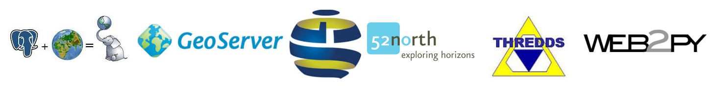

ReefTEMPS
Réseau de capteurs de température, pression et salinité dans le domaine côtier du Pacifique Sud, Ouest et Sud Ouest
Réseau de capteur ad hoc, architecture SOA, intéropérabilité des flux
Sylvie Fiat - IRD - GOPS


Guyennon, 2010
Ce qui nous intéresse aujourd'hui
1 Multiplicité des services pour toucher les différentes communautés d'utilisateurs
2 Architecture SOA portée sous Docker pour faciliter l'installation d'instances chez les producteurs

2 Dockerisation
Raison n°1: Le choix du multi-instance

2 Dockerisation
Cas n°1: l'éditeur fournit une image